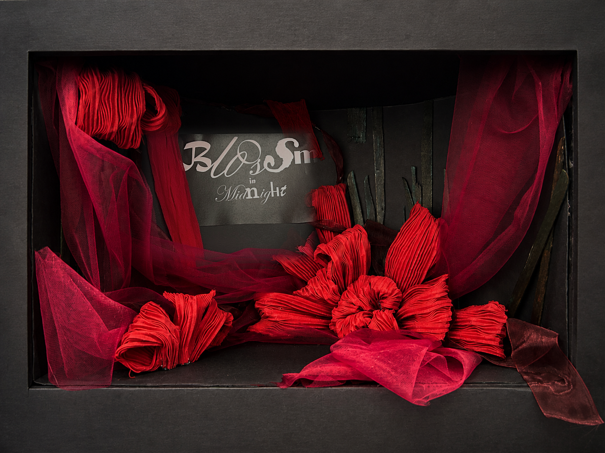
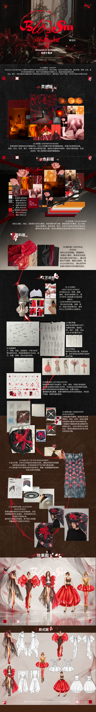
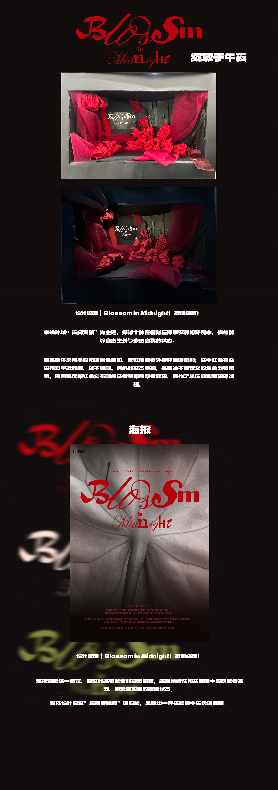
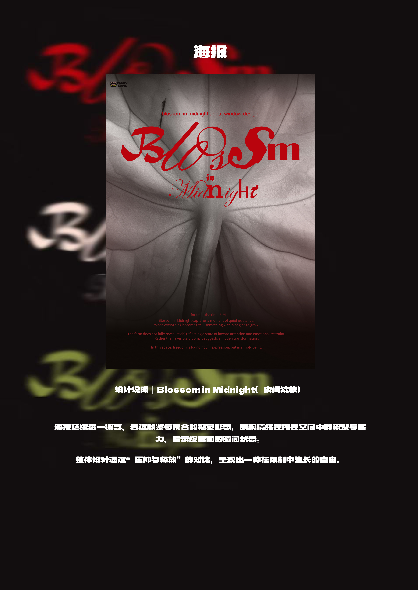

空间
黑色盒体把视线压低, 形成一种被包裹、被限制的观看关系。
服装设计 / 传统手工艺 / 橱窗展示
在半封闭的黑色空间里, 红色花朵与纱布从压抑中舒展, 形成一个关于生长、情绪与释放的夜间橱窗。

Concept
作品以“夜间绽放”为主题, 探讨个体在相对压抑与安静的环境中, 依然能够自由生长与表达自我的状态。
橱窗整体采用半封闭的黑色空间, 象征夜晚与外界环境的限制。红色花朵由布料塑造, 以不规则、有机的形态呈现, 表达不被定义的生命力与情绪。
Collection & Craft

Window Model
黑色盒体把视线压低, 形成一种被包裹、被限制的观看关系。
红色纱布和褶皱花朵带来流动感, 与封闭空间形成对比。
夜间灯光把花朵从暗处推出来, 强化“绽放前一刻”的张力。
Course Board

Poster
海报以花朵的近景肌理作为背景, 用模糊的标志和深色空间营造内在积聚感。它不是直接呈现开放的花, 而是暗示绽放前的瞬间。

Closing
从模型、海报到完整排版, 作品围绕“夜间绽放”建立出一条清晰的视觉线索: 被包裹的空间、向外生长的花、以及在暗处逐渐显形的生命力。